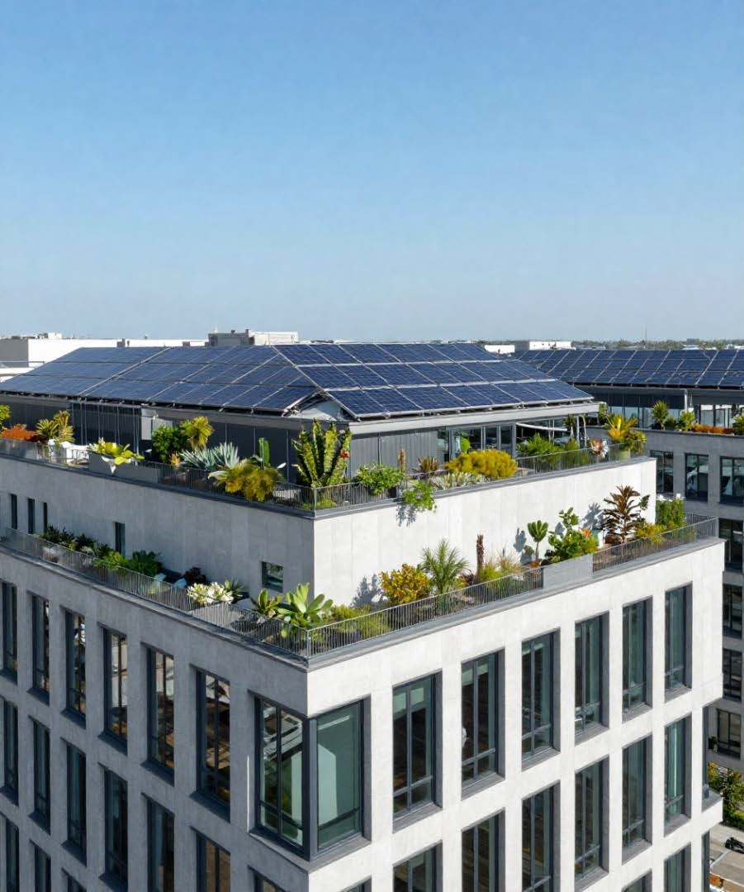

Des études et des notes
Sur les sujets où la filière a quelque chose à dire et des données à apporter.

La Tribune
La Tribune est la voix de l’Iseeer. Elle s’appuie sur l’expérience de ses membres et sur les travaux de l’institut pour éclairer les décideurs et contribuer aux politiques de rénovation énergétique et de transition du bâti.
Les règles de la rénovation bougent vite : calendrier des passoires énergétiques, aides, normes de construction. Elles sont souvent pensées métier par métier, et rarement avec ceux qui devront les appliquer. La Tribune veut faire entendre une parole construite entre des acteurs qui n’ont pas toujours les mêmes intérêts. C’est ce qui lui donnera du poids.
« C’est la filière qui s’organise. »
Sur les sujets où la filière a quelque chose à dire et des données à apporter.
Versées au débat public, adressées aux pouvoirs publics et aux élus.
Des repères communs, quand les métiers ne parlent pas encore le même langage.
Colloques, tables rondes, auditions.

Les premières publications de la Tribune seront mises en ligne ici.
Les membres de l’institut peuvent répondre à vos questions sur la rénovation, l’efficacité énergétique et la formation aux métiers du bâti.
Contact presse : Franck Thiebaux, 06 73 76 74 98.